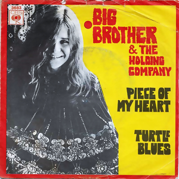

Day 1

Janis Joplin - Piece of My Heart 网易云
这首歌由Jerry Ragovoy和Bert Berns创作，Erma Franklin 在1967年录制了第一个版本。 在1968年，Big Brother and the Holding Company和当时作为领唱的Janis的表演让这首歌真正出名。
This song was written by Jerry Ragovoy and Bert Berns, and was originally recorded by Erma Franklin in 1967. Big Brother and the Holding Company with Janis as lead vocal, first performed this song in 1968.
Didn't I make you feel Like you were the only man, yeah Didn't I give you everything that a woman possibly can? But with all the love I give ya It's never enough But I'm gonna show you, baby, that a woman can be tough So come on, come on, come on, come on Take another little piece of my heart now, baby! Break it! Break another little bit of my heart now, honey Have a! Have another little piece of my heart now, baby You know you got it if it makes you feel good You're out on the street (looking good) And you know deep down in your heart that it ain't right And ah, you never, never hear me when I cry at night And oh oh I, I tell myself that I can't stand the pain But when you hold me in your arms, I say it again So come on, come on, come on, come on And take it! Take another little piece of my heart now, baby! Hey, break it! Break another little bit of my heart now, baby You can have a! Have another little piece of my heart now, baby You know you got it if it makes you feel good Hey, hey Take another little piece of my heart now, baby! Oh, break it! Break another little bit of my heart now, honey Hey, have a! Have another little piece of my heart now, baby Come on, take it!